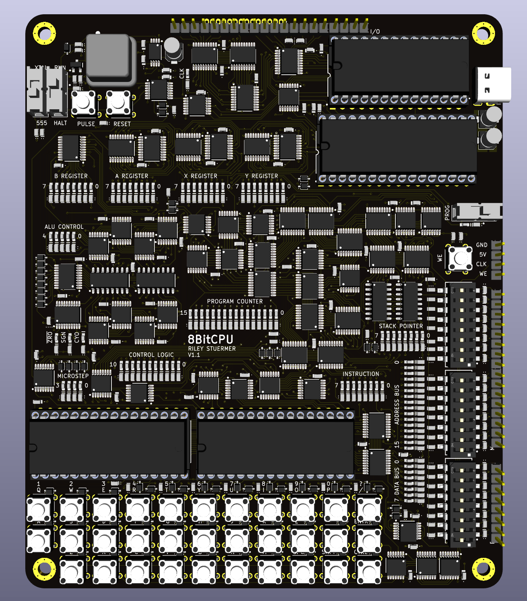

Design Overview of a Low-Level 8-Bit CPU
Design goals and requirements:
- Only use ICs with low-level functionality (logic gates, multiplexors/demultiplexors, counters, registers, buffers, and adders),
- Minimize number of unique parts to allow better price breaks,
- Execute programs at clock speeds of at least 1 MHz,
- User input and output,
- Maximum PCB board size of 150 mm by 150 mm, and
- The program ROM should be programmable independent of an external computer (but still have the option to be programmed using an external computer).
The chosen architecture of the CPU includes independent data and memory busses, which are 8-bits and 16-bits, respectively. Using two busses has the benefit compared to a single bus in allowing simultaneous control of the data and memory. This reduces the number microsteps per instruction compared to a single bus architecture, reducing the overall computation time. Since this CPU uses a wide variety of instructions, it can be categorized as a complex instruction set computer (CISC) as opposed to a reduced instruction set computer (RISC), which is more common today. A CISC architecture is the natural starting point for a relatively simple CPU since it limits the length of the assembly code required to run a program. The initial inspiration for my design came from the work of Ben Eater.
The schematic of the full CPU can be downloaded as a PDF here, and is embedded below.
In addition, a PDF of the PCB is available here, and is embedded below.
With the described architecture I was able to meet all of the requirements I sent for the project. The number of unique parts is 26, and 11 of which are ICs of the specified variety; a program was executed using a 1 MHz clock; there is a keyboard and digital pins for user input and there are LEDs, LCDs and digital pins for output; the board size is 125 mm by 150 mm; finally, programs can be uploaded into the CPU entirely using DIP switches.
The full PCB source files can be found on my GitHub, which will later be updated to include the microcontroller code used to program both the control ROM and program ROM. I will also include an description of each instruction and microinstruction, as well as the definition of the each instruction in terms of the microinstructions.
The remainder of this document will highlight a couple aspects of the design to try and explain the reasoning behind different design decisions.
Control Logic
A program is executed on a CPU by performing a series of instructions in an order defined by the user. Each instruction is associated with a number, which tells the control logic which commands to send to the rest of the CPU. Choosing the instruction number to be an 8-bit number allows 28 = 256 unique instructions to be defined. The commands are sent to the rest of the CPU by toggling various control signals, ultimately dictating, for example, when registers should store a value, when counters should increment, or what operations are performed by the arithmetic logic unit (ALU). These small-scale operations compose instructions, and are hence termed microinstructions. The steps of an instruction that consists of groups of microinstructions occurring at the same time are called microsteps.
A ROM chip can be used to map the instructions (as well as flags, interrupts, and microstep number) to the desired combination of control line signals. For example if the chosen ROM chip stores 8-bits of data at each address location, each output bit could be used for one control line. Hence, 40 control lines would require five 8-bit ROM chips. This is quite a lot of hardware, so instead the ROM output bits can be fanned-out through a series of demultiplexors (DEMUXs). In this case each DEMUX output bit can make up one control line. If the control lines are fanned out to the maximum extent, a 6-to-64 DEMUX would be needed to control all 40 control lines (a 5-to-32 DEMUX would be eight output bits short). This would minimize the number of ICs required since only one 8-bit ROM chip would be needed to control the 6 DEMUX inputs. The downside of fanning out the control logic is that control lines can never be simultaneously enabled. To perform certain operations some control lines must be enabled simultaneously, for example, enable output of the A register while enabling input of the B register to move the contents of the A register to the B register. This can be remedied by splitting the control lines into multiple sets. Using sets allows any one control signal from each set to be active simultaneously. The tradeoff is the more sets desired, the more hardware needed.
Considering this tradeoff, my design uses three sets to achieve 40
control signals. These sets are composed of two 4-to-16 DEMUXs and one
3-to-8 DEMUX. This results in a total of three control signals that can
be active simultaneously during any microstep. Two 8-bit ROM chips are
required to give the 4 + 4 + 3 = 11 DEMUX inputs (the extra five bits
will be used for controlling the ALU operation, described in the next
section). To maximize the types of instructions that can be achieved,
the control lines were split into categories which were in general:
output to data bus, input from data bus, and output to the memory bus.
Miscellaneous control lines were fit into the most practical set. An
additional benefit of using sets of control lines is the intrinsic
safety of preventing shorts on the busses by guaranteeing only one chip
can output at a time. For example, if a microinstruction which outputs
the A register contents to the data bus, denoted
AO, and a microinstruction that outputs the B register
contents to the data bus, denoted BO are both in the first
control line set, it is physically impossible for them to be on at the
same time, so they will never cause a short circuit on the data bus.
Arithmetic Logic Unit
One key characteristic of a CPU is its ability to perform logical operations. Such operations could involve one input, termed a unary operation, or two inputs, termed a binary operation. In either case, a single output is the result. The number of bits per input or output is determined by the architecture of the CPU, in this case it is 8-bits.
One example of a unary operation is the bitwise NOT
operation, which converts a 0 to a 1 and a
1 to a 0 for each bit of the input. For
example, NOT 01010101 outputs
10101010. An example of a binary operation is the bitwise
AND operation, which will return an output bit of
1 if the corresponding bits from each input is
1, and return an output bit of
0 otherwise. For example, 01010101 AND
00001111 outputs 00000101. Another binary operation
is addition, where two numbers are added together to get a resulting
output. In case of overflow of the result beyond 8-bits (i.e. addition
results in a number greater than 255), a carry flag is set. Flags such
as this carry flag can be used to allow the computer to make decisions
based on certain conditions, much like an if statement in
high-level programming languages.
To perform various logic operations, the arithmetic logic unit (ALU)
in this CPU takes the contents of A and B registers as the two inputs,
denoted A and B, respectively. In my design,
the operation performed between the n-th bit of A and
B is determined using a 4-to-1 multiplexor (MUX). One MUX
is used for each output bit. The MUX selector for the n-th bit was
chosen as the two bit value coming n-th bit of B and
A, where B is the most significant selector.
This MUX selector is therefore denoted BAn.
These selector bits choose which one bit to output from the MUX when
presented with four input bit options. ALU control signals from the ROM are
used as the input bits. Different combinations of these ALU control
signals will effectively perform different operations on the n-th bit of
A and B. For example, if the four ALU control
signals are 1000, then only when the selector bits choose
to output the most significant input bit is the output 1,
otherwise the output is 0. Hence, BAn =
11 will make the output of the n-th bit 1, while
the other options BAn = 00, 01, 10 will
make the output 0. This makes 1000 the ALU
control signal for the bitwise AND operation. As another
example, the ALU control signal 1110 is for the bitwise
OR operation. The desired ALU control signals are supplied to
each of the eight MUXs to complete the operation on all eight bits
simultaneously. This 8-bit MUX output can be termed the
logic-ALU-MUX-output.
An additional eight 4-to-1 MUXs are hardwired to output either
A or 00000000 based on the value of a fifth ALU
control signal. This 8-bit MUX output can be termed the
A-ALU-MUX-output. These two 8-bit MUX outputs are fed to an adder. When
the A ALU MUX output is disabled (set to output 00000000), no
addition occurs, and the result of the logic-ALU-MUX-output is sent to
the data bus. In comparison, if the logic-ALU-MUX-output is set to, for
example, B, and the A-ALU-MUX-output is enabled (set to output
A), the addition A+B will occur and will be outputted
to the data bus. This ALU architecture allows virtually every logic
operation to be performed on the A and B registers with vastly fewer ICs
then if the physical gates (i.e. A AND B, NOT A,
etc.) were all implemented with logic gates. This ALU design is based on
that of the open source Gigatron TTL computer, but I chose to implement
a larger number of logic operations into my instruction set. Based on
the value of the final ALU output bits, a zero, sign, and carry flag can
be saved to a flag register.
Other Components
Two other registers, an X and Y register, are also available for general use. A stack pointer was included which accesses 256 bytes of RAM, which can greatly increase the complexity of the program that can be run by allowing subroutines, or loops. A keyboard is included which triggers an interrupt service routine shortly after any key is pressed. The interrupt service routine starts after any in-progress instruction is finished, and saves the keyboard contents as 4 bytes in RAM, with the memory location dictated by a keyboard-head-pointer. A keyboard-tail-pointer can then be used to retrieve any recent keyboard presses at a time dictated by the program. This head-tail system allows multiple inputs to be captured for processing, without overwriting previous inputs not yet processed. An additional interrupt is included which immediately prepares the CPU in a state for the program ROM to be programmed.
Assembly and Instruction Set
The instruction set used by this CPU is composed of 142 instructions and is roughly based on that of the 8080 microprocessor. However, each microstep of the instruction set was designed from scratch to work most efficiently with the CPU's hardware. One simple program I wrote using the instructions is the Fibonacci sequence, which is shown in the following video:
The assembly code used to run the Fibonacci sequence program was made
of the following list of instructions: LD_A_byte, 0x01, LD_B_byte,
0x00, LD_X_byte, 0x01, LD_Y_byte, 0x00, PUSH_A, PUSH_B, LW, MOV_B_A,
INC_AB, JNC_dble, 0x00, 0x0C, POP_B, POP_A, ADD_B, MOV_B_X, MOV_X_A,
JNC_dble, 0x00, 0x08, JMP_dble, 0x00, 0x18.
Analyzing this code, first the A, B, X, and Y registers are
initialized with
1, 0, 1, and 0,
respectively. Note that the result of each step of the Fibonacci
sequence is presented in the X register, with the initial value being
1. Next, the values of
A and B are pushed to the stack pointer so they can be
recalled in the future after running a subroutine. THe subroutine is a
delay which controls how often to output each step of the Fibonacci
sequence results. This is necessary because otherwise the 1 MHz clock
would output the results too quick to see. To create this delay, A is loaded
with 0 using the LW microinstruction before copying
the contents of A to B (this is another method to
initialize the A and B registers). Next, the 16-bit combination of
A and B is incremented by 1. After
incrementing, it is tested if the carry flag is active which would occur
when the overflow occurs from addition. If there is not a carry flag,
the program jumps back to the INC_AB instruction for additional
incrementing. This cycle continues until overflow actually occurs, which
is after 216 increments, which was a sufficient delay. After
this pause, the actual computation of the current step of the Fibonacci
sequence can occur. The values of A and B
are restored from the stack, and B is added to
A, with the result stored back in A. Next,
X is moved to B and A is moved to
X. The program then jumps back to the PUSH_A
instruction to restart the timer delay before computing the next step of
the sequence. This delay-computation loop continues until the Fibonacci
sequence value maxes out the 8-bit space it is stored in (as signified
by a carry flag from overflow of addition). When overflow occurs the
delay-computation loop is ended with another jump-if-not-carry
instruction. Finally, the program calls JMP_dble which is
instructed to jump back to itself, creating an infinite loop of the last
three instructions. This serves as an end to the program.
In the video, the LEDs for the X register (section of LEDs third
from the left in the upper half of the PCB) shows an output of
00000001, 00000001, 00000010, 00000011, 00000101, ..., which
is binary for 1, 1, 2, 3, 5, ..., i.e. the Fibonacci
sequence.
Physical Design
This project was initially prototyped on breadboards, which required well over 50 m of wire. Although each individual module worked when tested, there were problems when connecting all modules to form the complete processor. This was largely because the connections tended to become loose within the breadboard inserts. For this reason, a PCB design was necessary for further validation of the design. The small TSSOP packages used for the PCB allowed for a 125 mm by 150 mm four layer board. A dedicated ground layer and 5 V power layer were used, but some traces needed to be routed through the power layer.

I completed the first iteration of the PCB design in Altium; however I have since transitioned to KiCad due to it being open-source and cross-platform, which has produced nice results:
Test Process
While designing this project there were many opportunities for error due to the total component count exceeding 500, and 142 instructions made up of up to 16 different microsteps each. Troubleshooting with an oscilloscope was a good first step and allowed to check the voltage levels of various signals, but more often issues were not related to the analog nature of the signal. Instead, the actual logic had to be debugged. Simply monitoring if certain signals are correctly set as high or low at the correct times would be sufficient. To this point, being able to monitor many signals simultaneously would be beneficial, and is something an oscilloscope can fall short at.
A digital logic analyzer makes a good alternative. In my case, I used the Saleae Logic 8, which has eight channels. Using this I was able to debug both my physical layout and my instruction set by monitoring different busses while running a program. An example of the debugging process is shown below, where a the contents of the data bus were captured during execution of the Fibonacci sequence program.
A screenshot of the waveforms of the bus while running the Fibonacci sequence is shown below:
One of my favorite things about the Saleae logic analyzer is its ease of use. It can be plugged into any computer (okay, maybe not an 8-bit CPU!) since the provided software is cross-platform. It's small form factor and convenient leads make it easy to switch debugging from one project to another. When considering the analog capabilities and the student discount, I would recommend this piece of test equipment to other students.
Next Steps
I am currently working on interfacing with the keyboard and the display to print characters. This will set the stage for the creation of a simple game such as snake. I have programmed such a game in C++ using code that could be most easily represented by the instruction set of this CPU.